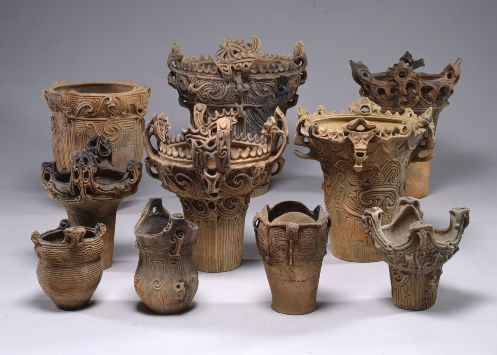
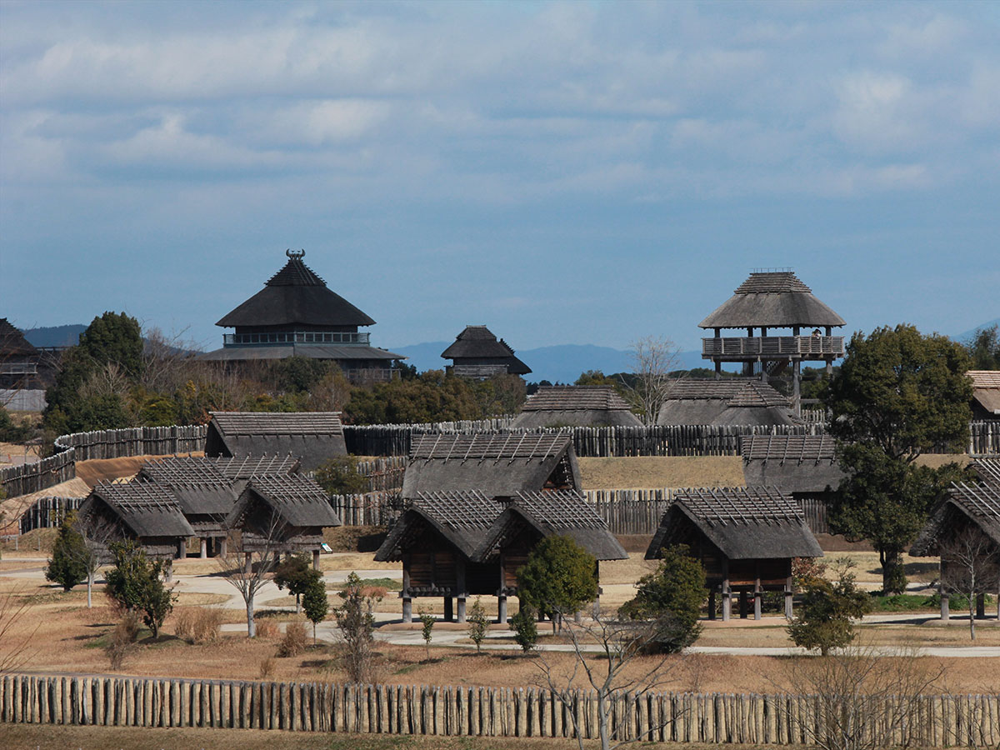
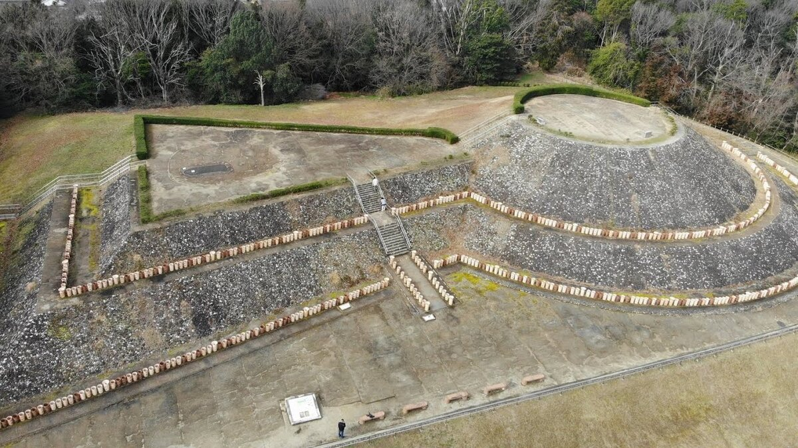
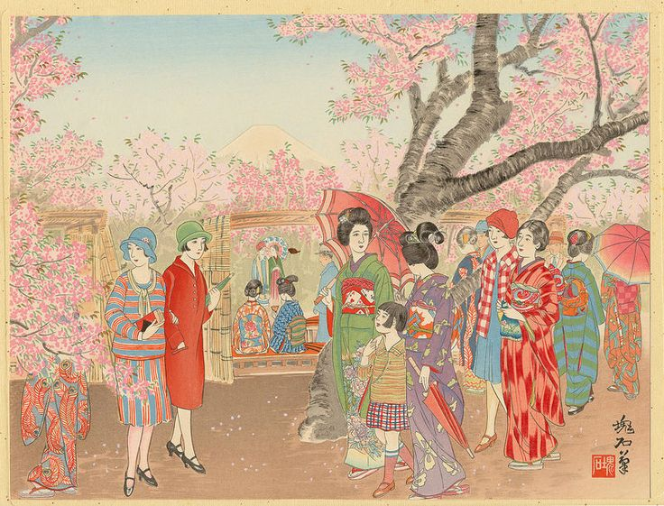
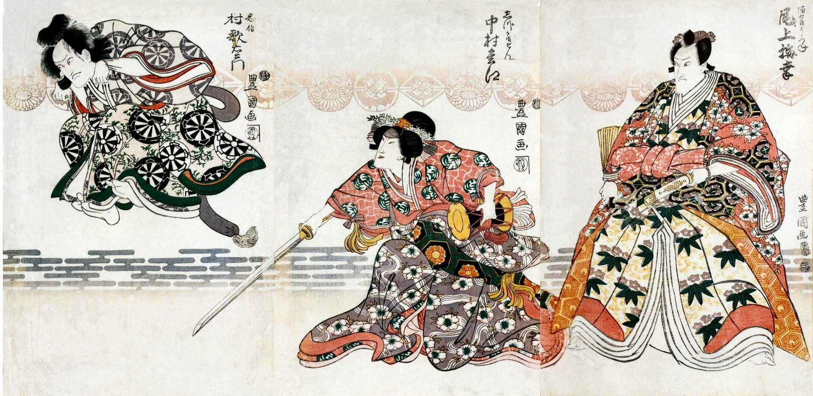
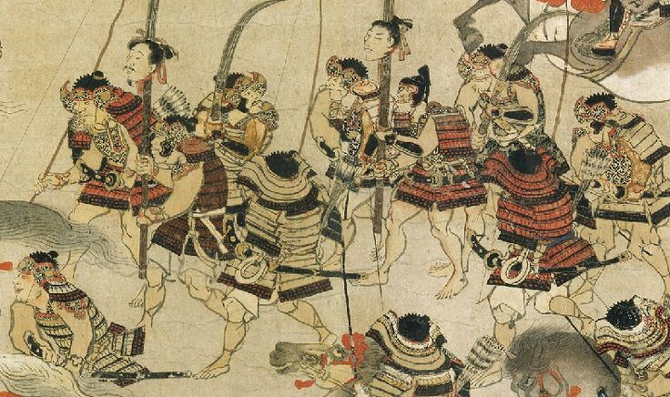
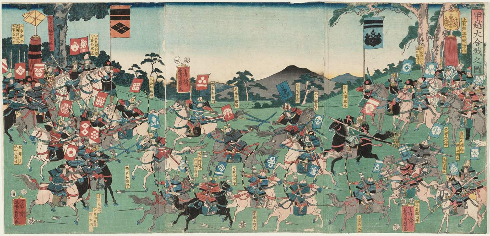

Средние века
Современность
Древность
История Японии в древности – это период формирования основ японской культуры, государственности и идентичности. Этот период охватывает время от самых ранних поселений до конца периода Хэйан (приблизительно до 1185 года) и включает в себя эпохи Дзёмон, Яёй, Кофун, Асука и Нара.
I. Доисторическая Япония (Периоды Дзёмон и Яёй):
Период Дзёмон (ок. 14 000 – 300 гг. до н.э.):
Происхождение названия: Название происходит от японского слова “дзёмон” (縄文), что означает “след веревки” или “узор веревки”. Это относится к характерному орнаменту, которым украшалась керамика того времени.Население и образ жизни: Население Дзёмон состояло из охотников, собирателей и рыболовов. Они жили в небольших поселениях, часто расположенных вдоль побережий и рек.
Жилища: Жилища обычно представляли собой полуземлянки с крышей из веток и травы. В центре жилища располагался очаг.
Технологии и артефакты:
- Керамика: Дзёмонцы были одними из первых в мире, кто начал изготавливать керамику. Керамические изделия отличались разнообразием форм и украшались сложными узорами, выполненными с помощью веревок, палочек и других инструментов.
- Каменные орудия: Использовались каменные орудия для охоты, обработки дерева и приготовления пищи.
- Костяные и роговые изделия: Из кости и рога изготавливались рыболовные крючки, гарпуны и другие инструменты.
- Статуэтки Догу: Загадочные глиняные фигурки, изображающие людей и животных. Их назначение до сих пор неясно, но предполагается, что они использовались в ритуальных целях.
- Социальная организация: Предполагается, что общество Дзёмон было относительно эгалитарным, без ярко выраженной социальной иерархии.


Период Яёй (ок. 300 г. до н.э. – 300 г. н.э.):
Влияние извне: На культуру Яёй оказали сильное влияние континентальные культуры, особенно из Кореи и Китая.Рисоводство: Главным событием этого периода стало распространение рисоводства. Выращивание риса позволило поддерживать большее население и привело к оседлому образу жизни.
Технологии:
- Бронза и железо: В период Яёй появились бронзовые и железные орудия и оружие, которые значительно повысили эффективность сельского хозяйства и ведения войны.
- Ткачество: Развитие ткачества позволило изготавливать более качественную одежду.
- Ирригация: Для эффективного выращивания риса были построены ирригационные системы.
- Социальная структура: В период Яёй начала формироваться социальная иерархия. Появились вожди и знать, контролировавшие землю и ресурсы.
- Религиозные верования: Развивались анимистические верования, связанные с культом природы и предков.
- Археологические находки: Археологи находят остатки рисовых полей, поселений, бронзовые зеркала, мечи и колокола (дотаку), которые, вероятно, использовались в ритуальных целях.
II. Формирование государственности (Периоды Кофун, Асука и Нара):
Период Кофун (ок. 300 – 538 гг. н.э.):
Курганы Кофун: Этот период получил свое название от огромных курганных захоронений (кофун), которые строились для правящей элиты. Самые большие кофуны достигали сотен метров в длину и имели форму замочной скважины.Керамика Ханива: Курганы часто украшались терракотовыми фигурками ханива, изображавшими людей, животных и предметы быта.
Централизация власти: Строительство кофунов свидетельствует о формировании сильной централизованной власти, способной мобилизовать большие ресурсы для осуществления масштабных проектов.
Клан Ямато: Клан Ямато постепенно усиливал свое влияние и в конечном итоге стал доминирующим в Японии.
Контакты с Кореей и Китаем: Расширение контактов с Кореей и Китаем привело к проникновению новых технологий и культурных идей.


Период Асука (538 – 710 гг. н.э.):
Буддизм: Введение буддизма из Кореи оказало огромное влияние на японское общество и культуру. Буддизм распространялся при поддержке правящей элиты, в частности, принца Сётоку.Принц Сётоку: Принц Сётоку был выдающимся государственным деятелем и реформатором. Он известен своими усилиями по распространению буддизма и укреплению центральной власти.
“Конституция семнадцати статей”: Принц Сётоку разработал “Конституцию семнадцати статей”, которая представляла собой свод моральных принципов и правил поведения для чиновников и правящей элиты. Конституция была вдохновлена буддийскими и конфуцианскими идеями.
Китайская письменность: В этот период была принята китайская письменность, что позволило развивать образование и администрацию.
Строительство храмов: Активно строились буддийские храмы и монастыри, которые становились центрами культуры и образования.
Попытки централизации: Предпринимались попытки централизации власти по китайскому образцу, но они не всегда были успешными.
Период Нара (710 – 794 гг. н.э.):
Первая постоянная столица: В 710 году была основана первая постоянная столица Японии – Нара (Хэйдзё-кё), построенная по образцу китайской столицы Чанъань.Укрепление государства: В период Нара продолжалось укрепление централизованной власти и развитие государственного аппарата.
Развитие буддизма: Буддизм получил еще большее распространение и поддержку государства.
Храм Тодайдзи: В Наре был построен храм Тодайдзи, в котором находится огромная бронзовая статуя Будды Вайрочаны.
Исторические хроники: В этот период были созданы первые японские исторические хроники – “Кодзики” (Записи о деяниях древности) и “Нихон сёки” (Анналы Японии), в которых излагалась мифологическая история Японии и генеалогия императорского рода.
Влияние аристократии: В период Нара усилилось влияние аристократии, которая занимала ключевые посты в государственном аппарате.

III. Период Хэйан (794 – 1185 гг.):
Перенос столицы в Хэйан-кё (Киото): В 794 году столица была перенесена из Нары в Хэйан-кё (平安京, “Столица мира и спокойствия”), современный Киото. Этот перенос ознаменовал начало нового периода в истории Японии.Расцвет аристократической культуры: Период Хэйан известен своим расцветом аристократической культуры. Аристократы занимались изысканными искусствами, литературой и поэзией.
Развитие японской литературы: В этот период были созданы шедевры японской литературы, такие как “Повесть о Гэндзи” Мурасаки Сикибу и “Записки у изголовья” Сэй Сёнагон.
Развитие японской письменности: Была создана азбука кана (хирагана и катакана), которая позволила записывать японский язык более удобным способом, чем китайскими иероглифами. Это способствовало развитию японской литературы и культуры.
Ослабление центральной власти: В период Хэйан постепенно ослабевала центральная власть, а усиливалось влияние провинциальных кланов.
Рост влияния буддийских монастырей: Буддийские монастыри накопили огромные богатства и стали влиятельными политическими силами.
Клан Фудзивара: Клан Фудзивара доминировал в политической жизни Японии в течение большей части периода Хэйан. Фудзивара занимали ключевые посты в правительстве и контролировали императорский двор.
Конец периода Хэйан: Период Хэйан закончился гражданскими войнами и установлением сёгуната Камакура в 1185 году.
Основные характеристики древней Японии:
- Формирование японской идентичности: В этот период происходило формирование японской идентичности и культуры, отличающейся от культуры континентальной Азии.
- Синтез культур: Японская культура формировалась путем синтеза местных традиций и заимствований из Кореи и Китая.
- Важность ритуалов и религии: Ритуалы и религия играли важную роль в жизни древних японцев.
- Развитие государственности: От небольших земледельческих общин до централизованного государства с императорской властью.
- Роль аристократии: Аристократия играла ключевую роль в политической и культурной жизни Японии.
Древняя история Японии заложила фундамент для последующего развития страны и оставила неизгладимый след в японской культуре и традициях.
Средние века
История Японии в средние века охватывает период с 12 по 16 века и включает в себя несколько ключевых этапов: эпохи Хэйан, Камакура, Муромати и Сэнгоку. Этот период характеризуется значительными политическими, социальными и культурными изменениями, которые оказали влияние на формирование японской идентичности.

I. Эпоха Хэйан (794–1185)
- Перенос столицы в Хэйан-кё: В 794 году столица была перенесена из Нары в Хэйан-кё (современный Киото), что ознаменовало начало нового культурного и политического периода.- Расцвет аристократической культуры: Эпоха Хэйан известна своим расцветом литературы и искусства. Аристократы занимались поэзией, живописью и театром.
- Развитие японской литературы: В этот период были созданы шедевры японской литературы, такие как «Повесть о Гэндзи» Мурасаки Сикибу и «Записки у изголовья» Сэй Сёнагон.
- Система власти: Центральная власть постепенно ослабевала, а влияние провинциальных кланов возрастало. Это создавало условия для будущих конфликтов.
- Укрепление буддизма: Буддизм продолжал развиваться, становясь важной частью культурной и духовной жизни японцев.

II. Эпоха Камакура (1185–1333)
- Установление сёгуната: Эпоха Камакура начинается с установления первого сёгуната, когда самурайский лидер Миномото но Ёритомо одержал победу в Гэмпэйской войне. Он основал сёгунат в Камакуре, что ознаменовало начало правления самураев.- Рост влияния самураев: Этот период характеризуется укреплением самурайского класса и развитием военной культуры. Самураи становятся важной частью японского общества.
- Монгольские вторжения: Сёгунат столкнулся с угрозой со стороны Монголии, когда в 1274 и 1281 годах монгольские войска пытались завоевать Японию. Оба вторжения были остановлены, что укрепило национальную идентичность.
- Развитие буддизма: Буддизм продолжает оказывать влияние на жизнь японцев, с акцентом на практические аспекты, такие как медитация.

III. Эпоха Муромати (1336–1573)
- Новый сёгунат: Эпоха Муромати начинается с нового сёгуната, основанного Ашикагой Ткаудзю. Этот период отмечен политической нестабильностью и борьбой между кланами.- Расцвет искусства: Происходит расцвет искусства, особенно в чайной церемонии, театре Но и каллиграфии. Культура становится более доступной для широкой публики.
- Гражданская война: В конце эпохи Муромати Япония погружается в гражданскую войну, известную как эпоха Сэнгоку (1467–1568), когда различные самурайские кланы боролись за власть.
- Экономическое развитие: Развивается торговля, в том числе с иностранными государствами, что способствует экономическому росту.

IV. Эпоха Сэнгоку (1467–1573)
- Время хаоса и войн: Эпоха Сэнгоку — время конфликтов, когда множество самурайских кланов боролись за контроль над территориями. Это создало условия для появления выдающихся полководцев.- Объединение Японии: Выдающиеся полководцы, такие как Ода Нобунага и Тойотомі Хидэёси, начали процесс объединения Японии. Нобунага смог объединить большую часть страны, но его смерть в 1582 году привела к новой борьбе за власть.
- Социальные изменения: В это время происходит значительная трансформация социальной структуры, с упором на военные и экономические достижения.
- Культура и искусство: Несмотря на войны, культура продолжает развиваться, появляются новые формы искусства, такие как театры Нох и Кабуки.
Современность
История современной Японии охватывает период с конца 19 века до настоящего времени и включает в себя множество значительных событий и изменений, которые сформировали современное японское общество, экономику и культуру. Вот основные этапы этой истории:
I. Эпоха Мэйдзи (1868–1912)
- Мэйдзи Реставрация: В 1868 году произошла реставрация власти императора Мэйдзи, что положило конец более чем 250-летнему периоду сёгуната Токугава. Это событие стало началом масштабных реформ, направленных на модернизацию страны.
- Западные реформы: Япония начала заимствовать технологии, науки и системы управления из Западной Европы и США. Были проведены реформы в армии, образовании и промышленности.
- Экономический рост: Создание современных промышленных предприятий и развитие транспортной инфраструктуры (железные дороги, телеграф) способствовали быстрому экономическому росту.
- Западные реформы: Япония начала заимствовать технологии, науки и системы управления из Западной Европы и США. Были проведены реформы в армии, образовании и промышленности.
- Экономический рост: Создание современных промышленных предприятий и развитие транспортной инфраструктуры (железные дороги, телеграф) способствовали быстрому экономическому росту.
II. Имперский период (1912–1945)
- Расширение влияния: Япония начала активно расширять свои территории, включая Тайвань (1895), Корею (1910) и части Китая (например, Маньчжурию в 1931 году).
- Участие в мировых войнах: Япония участвовала в Первой мировой войне на стороне Антанты, но после войны столкнулась с международной изоляцией. Во время Второй мировой войны Япония стала одним из главных агрессоров, что привело к конфликтам с США и другими странами.
- Атака на Перл-Харбор: 7 декабря 1941 года Япония атаковала американскую военно-морскую базу в Перл-Харборе, что стало причиной вступления США во Вторую мировую войну.
- Участие в мировых войнах: Япония участвовала в Первой мировой войне на стороне Антанты, но после войны столкнулась с международной изоляцией. Во время Второй мировой войны Япония стала одним из главных агрессоров, что привело к конфликтам с США и другими странами.
- Атака на Перл-Харбор: 7 декабря 1941 года Япония атаковала американскую военно-морскую базу в Перл-Харборе, что стало причиной вступления США во Вторую мировую войну.
III. Послевоенный период (1945–1952)
- Капитуляция: В августе 1945 года Япония капитулировала после атомных бомбардировок Хиросимы и Нагасаки. Это привело к оккупации Японии союзными войсками под руководством США.
- Конституция 1947 года: В 1947 году была принята новая конституция, которая провозгласила Японию парламентской демократией и отказалась от войны как средства разрешения международных споров.
- Экономические реформы: Проведенные реформы, включая земельную реформу и поддержку промышленности, способствовали восстановлению экономики.
- Конституция 1947 года: В 1947 году была принята новая конституция, которая провозгласила Японию парламентской демократией и отказалась от войны как средства разрешения международных споров.
- Экономические реформы: Проведенные реформы, включая земельную реформу и поддержку промышленности, способствовали восстановлению экономики.
IV. Экономический бум (1950-е – 1980-е)
- Экономический рост: Япония пережила период быстрого экономического роста, известный как "японское экономическое чудо". Страна стала одной из ведущих экономик мира.
- Технологические инновации: Япония сделала значительные успехи в производстве электроники, автомобилей и других технологий, что способствовало ее международной конкурентоспособности.
- Социальные изменения: Увеличение уровня жизни, рост среднего класса и изменения в социальной структуре стали характерными чертами этого периода.
- Технологические инновации: Япония сделала значительные успехи в производстве электроники, автомобилей и других технологий, что способствовало ее международной конкурентоспособности.
- Социальные изменения: Увеличение уровня жизни, рост среднего класса и изменения в социальной структуре стали характерными чертами этого периода.
V. Период стагнации (1990-е – 2000-е)
- Экономический пузырь: В конце 1980-х годов Япония столкнулась с экономическим пузырем, который лопнул в начале 1990-х, что привело к долгосрочной экономической стагнации, известной как "потерянное десятилетие".
- Социальные проблемы: Увеличение числа безработных, старение населения и снижение рождаемости стали важными социальными вопросами.
- Социальные проблемы: Увеличение числа безработных, старение населения и снижение рождаемости стали важными социальными вопросами.
VI. Современная Япония (2000-е – настоящее время)
- Экономические реформы: Правительство начало проводить реформы для стимулирования экономики, включая меры по поддержке инноваций и технологий.
- Культура и общество: Япония продолжает быть культурным центром, с влиянием на мировую поп-культуру (аниме, манга, мода).
- Проблемы безопасности: Япония сталкивается с вызовами, связанными с безопасностью, включая отношения с соседними странами, такими как Китай и Северная Корея.
- Стихийные бедствия: Страна также регулярно сталкивается с природными катастрофами, такими как землетрясения и цунами, что требует постоянного внимания к вопросам безопасности и устойчивости.
- Культура и общество: Япония продолжает быть культурным центром, с влиянием на мировую поп-культуру (аниме, манга, мода).
- Проблемы безопасности: Япония сталкивается с вызовами, связанными с безопасностью, включая отношения с соседними странами, такими как Китай и Северная Корея.
- Стихийные бедствия: Страна также регулярно сталкивается с природными катастрофами, такими как землетрясения и цунами, что требует постоянного внимания к вопросам безопасности и устойчивости.